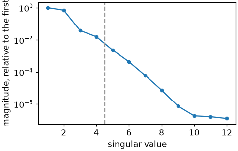
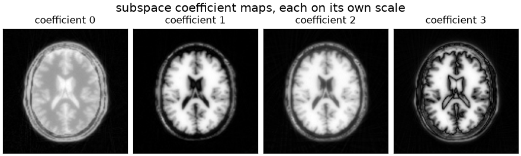
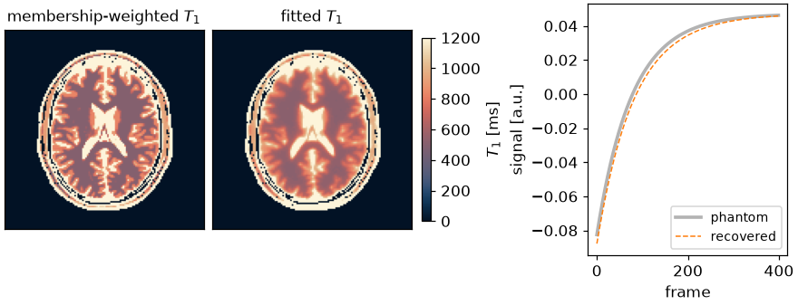

Note
Go to the end to download the full example code.
Subspace-constrained T1 mapping#
An inversion-recovery FLASH acquisition of four hundred frames, one spoke each, reconstructed into the coefficients of a signal subspace and fitted for \(T_1\).
A single spoke does not determine a frame. What makes the series recoverable is that the frames are not arbitrary: every voxel follows an inversion-recovery curve, and the curves of every plausible \(T_1\) lie close to a subspace of low dimension, four here. A subspace-constrained reconstruction [1] writes the unknown series as \(x_t = \sum_a \Phi_{at} \alpha_a\), which turns four hundred images into four coefficient maps, and the basis \(\Phi\) enters the encoding on the k-space side, after the transform and before the samples:
The subspace is estimated from a simulated dictionary, which is also what the parameter fit matches against.
The phantom and the coil sensitivities are built as in From k-space to image; the cell that does it is hidden on this page and present in the script this page can be downloaded as.
import csv
from pathlib import Path
import brainweb_dl
import numpy as np
import torch
from brainweb_dl import get_mri
from torchsim.simulators import MPnRAGESimulator
import bartorch
import bartorch.tools as bt
from bartorch import linop, optim, priors
SIZE = 128
COILS = 8
FRAMES = 400
RANK = 4
TR = 4.1 # ms
FLIP = 6.0 # degrees
The dictionary and its subspace#
The dictionary is simulated rather than tabulated: one curve per
\(T_1\), from the sequence that will be played.
MPnRAGESimulator is that sequence – an
inversion followed by a spoiled gradient-echo train with every shot read –
and simulate evaluates it over an array of parameters at once, giving
(entries, frames).
The same object serves the fit: handed to bartorch.nlop.Bloch() it is
a model operator, which is how Parameter maps straight from k-space
solves for the maps directly. Here only its forward evaluation is wanted.
t1_values = torch.linspace(100.0, 4500.0, 200) # ms
sequence = MPnRAGESimulator(nshots=FRAMES, flip=FLIP, TR=TR)
dictionary = torch.as_tensor(sequence.simulate(T1=t1_values))
left = torch.linalg.svd(dictionary.T.to(torch.complex64), full_matrices=False)[0]
basis = left[:, :RANK].T.contiguous()
print(f"dictionary {tuple(dictionary.shape)}, basis {tuple(basis.shape)}")
dictionary (200, 400), basis (4, 400)
The singular values of the dictionary say how many coefficients a reconstruction has to carry. The rank used here, four, is marked by the dashed line; it is a modelling decision rather than a measurement: too few coefficients bias the recovered curves toward the span of the basis, and too many increase the number of unknowns the undersampled data must determine.

Phantom#
Each tissue class is given the \(T_1\) of the BrainWeb table and its own curve from the same signal model, and the series is the membership-weighted sum of them. A voxel holding two tissues therefore follows a sum of two recovery curves, which is not itself an inversion-recovery curve – the partial-volume error any voxelwise fit carries.
Acquisition and reconstruction#
One golden-angle spoke per frame. The trajectory indexes frames as well as
samples, and the image the encoding operator maps from is the four
coefficient maps rather than the four hundred frames, with basis
contracting the one into the other.
trajectory = bt.traj(readout=SIZE, spokes=FRAMES, radial=True, golden=True)
trajectory = trajectory.reshape(FRAMES, 1, SIZE, 3)
frames = linop.NoncartesianSense(sensitivities, (FRAMES, SIZE, SIZE), traj=trajectory)
measured = bt.noise(frames(series), n=1e-7, s=5)
A = linop.NoncartesianSense(sensitivities, (RANK, SIZE, SIZE), traj=trajectory, basis=basis)
print(f"{A.ishape} -> {A.oshape}")
print(A.plan)
(4, 128, 128) -> (8, 400, 1, 128)
Plan(transform=nufft, image=sensitivities, kspace=basis, contraction=subspace(4), normal=kernel, coil_batch=1, streamed=coils, executor=slab)
plan.contraction reports the subspace and its rank, and the normal
operator is a point spread function over the basis as well as the
trajectory, so an iteration does not transform the four hundred frames.
The penalty is locally low rank [2]: the coefficient maps are stacked
into a matrix per block of voxels, and its nuclear norm is penalized.
joint_axes makes the coefficients the columns of that matrix, so the
penalty favours neighbouring voxels that follow the same few curves, rather
than coefficient maps that are each sparse. Penalizing the maps one at a
time does not couple the coefficients of a voxel.
data = measured / optim.data_scaling(measured[..., None], A=A)
term = priors.LocallyLowRank(axes=(-1, -2), weight=0.005, joint_axes=(-3,), block=8)
coefficients = optim.ADMM(term, maxiter=30)(data, A)
recovered = torch.einsum("af,ayx->fyx", basis.to(torch.complex64), coefficients)
Parameter fit#
The recovered coefficients are matched against the dictionary projected onto the same subspace, by the normalized inner product, which is dictionary matching performed in four dimensions rather than four hundred. Matching in the subspace and matching the reconstructed curves differ only by the component of the dictionary the basis discards.
atoms = basis.to(torch.complex64) @ dictionary.T.to(torch.complex64)
atoms = atoms / atoms.norm(dim=0, keepdim=True)
voxels = coefficients.reshape(RANK, -1)
voxels = voxels / voxels.norm(dim=0, keepdim=True).clamp(min=1e-12)
matched = (atoms.conj().T @ voxels).abs().argmax(0)
t1_map = t1_values[matched].reshape(SIZE, SIZE)
The fit is reported where the proton density is high enough for a curve to be defined, and separately for the voxels each tissue class dominates.
support = occupancy > 0.2 * float(occupancy.max())
dominant = memberships.argmax(0)
pure = memberships.max(0).values > 0.7
for name, index in CLASS.items():
selected = support & pure & (dominant == index)
if int(selected.sum()) < 20:
continue
estimate = float(t1_map[selected].median())
print(
f"{name:>13} table {tissue_t1[index]:6.0f} ms"
f" fitted {estimate:6.0f} ms ({int(selected.sum())} voxels)"
)
CSF table 2569 ms fitted 1515 ms (563 voxels)
GM table 833 ms fitted 830 ms (1461 voxels)
WM table 500 ms fitted 564 ms (2189 voxels)
FAT table 350 ms fitted 741 ms (23 voxels)
MUSCLE/SKIN table 900 ms fitted 1007 ms (377 voxels)
SKIN table 2569 ms fitted 1648 ms (411 voxels)


Each coefficient map is the weight of one singular vector of the dictionary. The first resembles a magnetization image; the later ones encode the differences between recovery curves that the earlier vectors do not represent, and do not correspond to tissue contrast.
The recovered curve is the reconstruction’s, which determines it only up to a global scale – the data was normalized before the solve – so the panel beside the maps compares the two after dividing that scale out. The fit is invariant to it, being a normalized inner product.
The \(T_1\) maps are drawn with the lipari colormap [3]. The printed table compares the fitted \(T_1\) with the tabulated value in the voxels each tissue class dominates. The fit is biased where two tissues meet, because the sum of two recovery curves is not a recovery curve, and it lies within the range of \(T_1\) the dictionary covers.
Estimating the parameters directly from k-space, without an intermediate series or a subspace, is Parameter maps straight from k-space.
References#
Total running time of the script: (0 minutes 24.979 seconds)